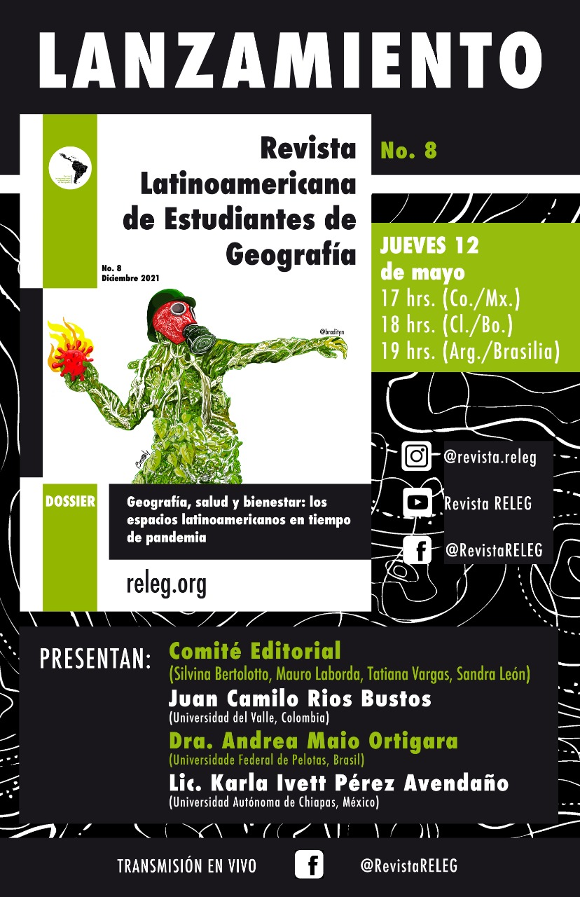

RELEG: Revista latinoamericana de estudiantes de geografia
Vol. 8, No. 1 (2021) 
SUMARIO
Contenido p. ii ______________
Editorial pp. iii–iv ____________
Geografía, salud y bienestar: los espacios latinoamericanos en tiempo de pandemia
As lutas pelo comum na pandemia: o caso da Estrada de Ferro Carajás no Maranhão - BR pp. 8–20 Victoria Ferreira Oliva
Análisis espaciotemporal de las dinámicas del Covid-19 en la ciudad de Bogotá desde su introducción hasta agosto del 2020 pp. 21–35 Mateo Martinez Bocanegra
La ayuda mutua frente a la pandemia en la ruralidad colombiana: estudio de caso La Soledad-Cali, Valle del Cauca pp. 37–49 Juan Camilo Ríos Bustos
Soacha durante la pandemia. La ciudad periférica en tiempos de crisis pp. 51–62 Pedro Medina Bernardes Bastos. Tadeu Asevedo Porto Maia, Adriana Caúla
CONFLICTOS SOCIOAMBIENTALES
“A cobertura que camufla o coronavírus”: uma leitura em metáforas pp. 64–76 Vicente Brêtas
El lado oculto de la agricultura moderna. Entrevista a
Walter A. Pengue pp. 78–89 Angela Ailen Belizón, Mariana Rocio Giangioble Puebla
DINÁMICAS URBANAS Y EXCLUSIÓN SOCIAL
Da espoliação à autofagia urbana: a geografia sacrificial das metrópoles brasileiras pp. 89–102 Giancarlo Alciaturi
VISIONES GEOPOLÍTICAS DE AMÉRICA LATINA
Sustitución de cultivos de uso ilícito en el Departamento de Nariño, Colombia. Una perspectiva geopolítica pp. 104–116 Samir Tarapués Chacón
LANIFICACIÓN Y GESTIÓN DEL TERRITORIO EN AMÉRICA LATINA
Desestructuración del territorio en Morococha, antigua área minera, por efecto de la “nueva minería” pp. 118–133 Iván Delgado Pugley
GESTIÓN DEL RIESGO Y CAMBIO CLIMÁTICO EN AMÉRICA LATINA
Causas de la sequía de 2020 en la Laguna de Metztitlán, Hidalgo pp. 135–148 Diego Antonio Caballero García
SECCIÓN LITERARIA
Desfalleciendo con fragmentos temporales pp. 150–152 Clara Charlotte Valdez López
Ciudade pp. 154–156 Guido Lins Lopes Bragion
Virhus pp. 158–160 José Enrique Cordero Cordero
Normas Editoriales
Normas editoriales pp. 162–167